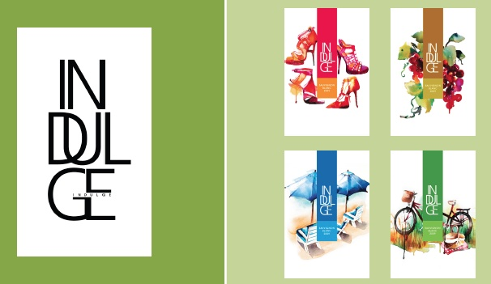
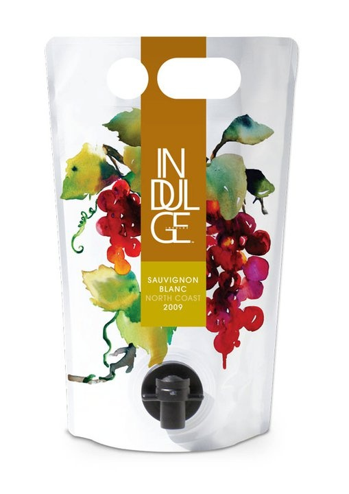
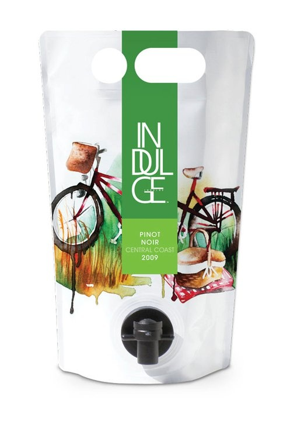
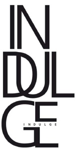

APL WINES / Santa Barbara, California
Alternative Packaging Innovation
Brand / Innovation / Packaging
New-brand development centered on an alternative Astrapouch package format—bringing product and packaging innovation together as part of the brand proposition.
THE WORK



